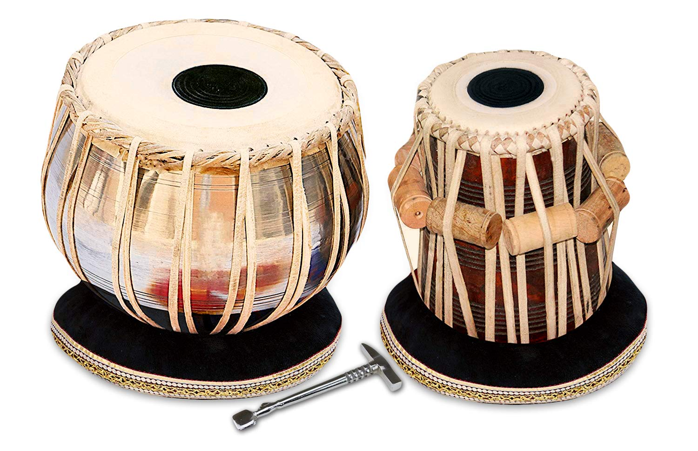

The tabla is the most commonly played drum set in North Indian music. It is the instrument most frequently used to accompany vocal and instrumental music, and dance; whereas its primary function is to maintain the metric cycle in which the compositions are set. Though the tabla is essentially an accompanying instrument, the tabla players are also soloists in their own right, and many have vast repertoires of elaborate compositions handed down orally from generation to generation.
The tabla takes its name from the tabl of Arabic origin. The general meaning of the term tabl is an instrument facing upwards, with a flat surface. Scholars opine that the term table of the English language has been taken from the term tabll Some are also of the opinion that the term tabl is not an Arabic word in origin, but is borrowed from the Latin tabula.
In the beginning, the instruments which were egg-shaped or hemispherical, with skin stretched over the opening, which can also be called kettledrum, were called tabl. These were essentially martial drums, which accompanied the military expeditions of Muslims. Though made of metal, these kettledrums were originally derived from the pot drums of primitive men. Later they became rounded like the egg; this may have been an adaptation to facilitate carrying them on the back of a horse or a camel. Slowly it became a generic term used as a prefix for all types of percussion instruments, spread over in the Middle East, no matter what shape they are, i.e. the tabl-baladi, the tabl-turki, tabl-naqqara, tabl-migri, tabl-al-gawig, etc.
